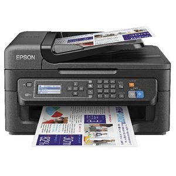
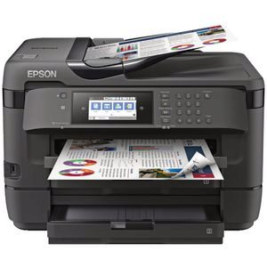
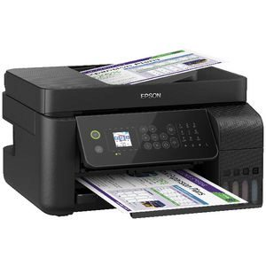
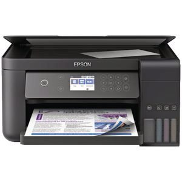

Printers |
|
|---|---|
Epson - Excees Your Vision™ |
|
|  |
Epson WorkForce Wireless Inkjet MFC Printer Description The Epson WorkForce WF-2630 Wireless Inkjet MFC Printer produces professional quality, fade resistant prints at ultra fast speeds so you can get your work done quickly. It supports copying and faxing, plus wireless printing from laptops, tablets and smartphones and you can scan directly to the cloud. With the Epson WorkForce WF-2630 you can print, copy, scan and fax your A4 documents. Price Inc GST $99.00 Price Ex GST $90.00 |
|  |
Epson WorkForce A3 Wireless MFC Printer Description This Epson WorkForce A3 Wireless MFC Printer allows you to print, copy, scan and fax from the same machine. It delivers high quality print results in both monochrome and colour plus supports wireless connectivity so you can print directly from your iOS or Android device. The machine would be perfect for use at home or in a small office environment. With this machine you can print, copy, scan and fax up to A3 size. Price Inc GST $359.00 Price Ex GST $326.36 |
|  |
Epson EcoTank A4 Colour Inkjet MFC Printer Description This Epson ET-4700 MFC Printer is perfect for home or workspace use to produce impressive colour or monochrome results. It uses the Epson EcoTank system so you don't have to worry about disposing of cartridges, simply top up the ink tanks and you're ready to continue printing. This MFC can be used to print, copy, scan and fax documents up to A4 size. Price Inc GST $499.00 Price Ex GST $453.64 |
|  |
Epson Expression Colour MFC Printer Description This Epson Expression ET-3700 MFC Printer has a compact, all-in-one design for use in your workspace. It uses an ink tank system so you don't have to worry about replacing cartridges, all you have to do is refill your high capacity ink tanks using an Epson ink bottle. This MFC is compatible with Apple AirPrint and WiFi Direct connectivity so you'll be able to connect and print wirelessly whenever necessary. The Expression ET-3700 can print, copy and scan your documents. Price Inc GST $547.00 Price Ex GST $543.64 |